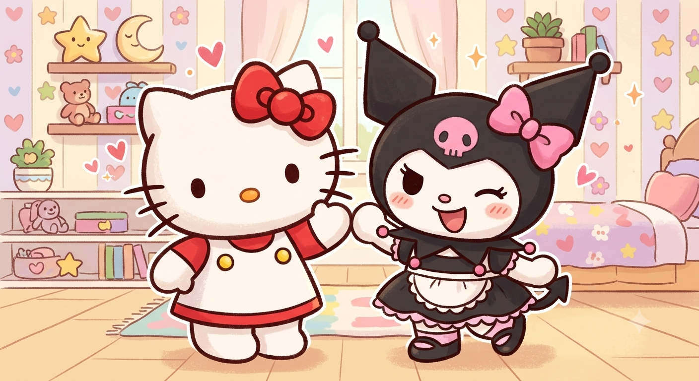
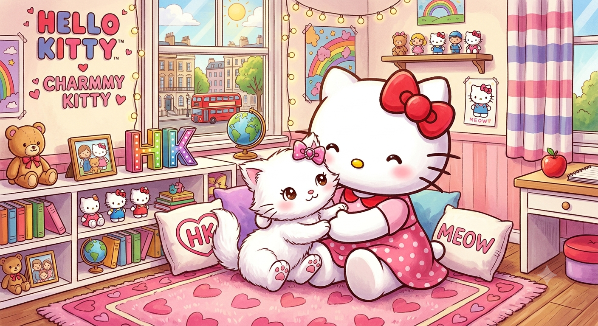

Meu primeiro post
Por: Giovanna Bernardes
Boas-vindas ao meu novo blog! Aqui vou compartilhar curiosidades sobre a Hello Kitty e Kuromi.
Vou compartilhar curiosidades sobre a Hello Kitty e a Kuromi

Por: Giovanna Bernardes
Boas-vindas ao meu novo blog! Aqui vou compartilhar curiosidades sobre a Hello Kitty e Kuromi.

Por: Giovanna Bernardes
A criadora revelou que a Hello Kitty é, na verdade, uma garotinha britânica que anda em duas patas e tem até uma gatinha de estimação
Fonte: CNN Brasil
Por: Giovanna Bernardes
O design sem boca serve para que as pessoas possam projetar seus próprios sentimentos nela; ela parece feliz se você estiver feliz
Fonte: Recreio
Por: Giovanna Bernardes
Por: Giovanna Bernardes
Por:Giovanna Bernardes